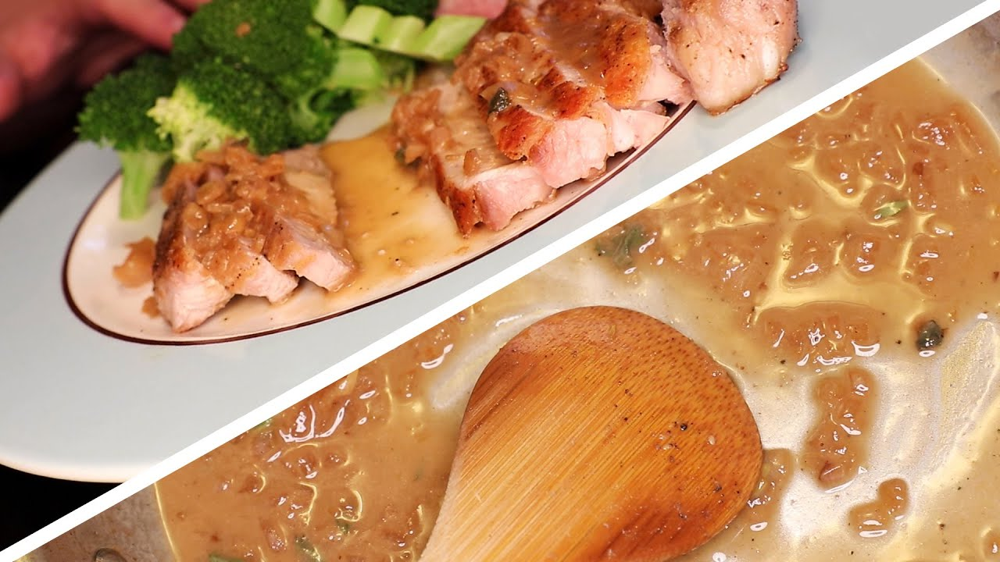

<!DOCTYPE html>
<!-- basic structure of an HTML document -->
<html>
	<head>
		<meta charset="UTF-8">
		<meta name="author" content="Jaeden Miguel G. Castro">
		<meta name="keywords" content="HTML, CSS">
		<meta name="revised" content="11-06-2021">
		<title> Pork Chops with Pan Sauce </title>
		<link rel="stylesheet" href="../css/stylemain.css">
		<link rel="icon" href="../images/favicon.png" type="image/png" sizes="512x512">
		<link rel="preconnect" href="https://fonts.googleapis.com">
		<link rel="preconnect" href="https://fonts.gstatic.com" crossorigin>
		<link href="https://fonts.googleapis.com/css2?family=Pacifico&family=Roboto:wght@100;400&display=swap" rel="stylesheet">

		<style>
			/* Included video */
			.video  { 
				width:560px; 
				height:315px; 
				position:absolute;
				border: 3px solid #F5DF98;
				margin-left: 75px;
			}
			/* Procedure */
			.box1  { 
				width:550px; 
				height:690px; 
				border: 3px solid #F5DF98; 
				float:right;
				margin-left:1000px;
				font-size: 18px;
				padding: 0px 0px 0px 0px;
				border-width: 0px 0px 3spx 3px;
				position:absolute;
				overflow: auto;
			}
			/* Notes on the Recipe */
			.box2  { 
				width:560px; 
				height:360px; 
				border: 3px solid #F5DF98; 
				float:left;
				margin-left:400px;
				margin-top: 350px;
				font-size: 22px;
				padding: 0px 10px 0px 10px;
				border-width: 3px 3px 0px 0px;
				position:absolute;
				overflow: auto;
			}
			:target#Anim1 {
				animation-name:sidebar1;
				animation-duration: 1s;
				animation-fill-mode: forwards;
			}
			@keyframes sidebar1 {
				0%   { left:-300px; top:0px;}
				100%  {left:0px; top:0px;}
			}
			:target#Anim2 {
				animation-name:sidebar2;
				animation-duration: 1s;

			}
			@keyframes sidebar2 {
				0%   { left:0px; top:0px;}
				100%  {left:-370px; top:0px;}
			}
			#socialmedia {
				width: 64px;
				height: 64x;
			}
			a img.hover {
				display: none;
			}
			a img.default {
				display: inherit;
			}
			a:hover img.hover {
				display: inherit;
			}
			a:hover img.default {
				display: none

	</head>
<!-- Side navigation -->
<body>
<!-- Sidebar -->
<div>
<a href="#Anim1"></a>
</div>
<aside id ="Anim1">
<a href="#Anim2">  </a>
<h1> Recipes: </h1>
  <p>Recipe #1: Porkchops with Pan Sauce</p>
  <a href="../htdocs/recipe1.html"></a>
  <p>Recipe #2: Chicken and Rice Bake</p>
  <a href="../htdocs/recipe2.html"></a>
  <h2>Home Page</h2>
  <a href="../index.html"></a>
  <p>Recipe #4: Chocolate Cake with Italian Meringue</p>
  <a href="../htdocs/recipe4.html"></a>
  
  	<a href="https://www.youtube.com/channel/UC9_p50tH3WmMslWRWKnM7dQ">
	 
	
	</a>
	<a href="https://twitter.com/aragusea">
	 
	
	</a>
	<a href="https://www.facebook.com/raedenjin">
	</img>
	</img>
	</a>
</aside>
<aside id="Anim2">
<a href="#Anim2">  </a>
  <h1> Recipes: </h1>
  <p>Recipe #1: Porkchops with Pan Sauce</p>
  <a href="../htdocs/recipe1.html"></a>
  <p>Recipe #2: Chicken and Rice Bake</p>
  <a href="../htdocs/recipe2.html"></a>
  <h2>Home Page</h2>
  <a href="../index.html"></a>
  <p>Recipe #4: Chocolate Cake with Italian Meringue</p>
  <a href="../htdocs/recipe4.html"></a>
  
  <h6> My Facebook, Adam Ragusea's Youtube and Facebook:</h6>
  
  	<a href="https://www.youtube.com/channel/UC9_p50tH3WmMslWRWKnM7dQ">
	 
	
	</a>
	<a href="https://twitter.com/aragusea">
	 
	
	</a>
	<a href="https://www.facebook.com/raedenjin">
	</img>
	</img>
	</a>
</aside>
<!-- Main Part of Website -->
<header> <!-- Title  -->
 <h1 style="text-align: center; font-family: 'Pacifico', cursive;">Chocolate Cake with Itallian Meringue</h1>
</header>
	<section> <!-- Autoplay works on Internet Explorer, but not on chrome.  -->
		<iframe class="video" width="560" height="315" src="https://www.youtube.com/embed/nlEmzQe_O2M?&autoplay=1" title="YouTube video player" frameborder="0" allow="accelerometer; autoplay; clipboard-write; encrypted-media; gyroscope; picture-in-picture" allowfullscreen></iframe>
	</section>
	<section class="box1"> <!-- Procedure -->
	<h2>Procedure </h2> 
	<ol>
		<li>Chop up a red onion or a shallot into small pieces. 
		<li>Set frying pan to medium heat and set the pot with a steamer basket to high heat. 
		<li>Season pork chops with oil, pepper, and salt and gently place into the hot pan.
		<li>While the pork chops are cooking, chop up the broccoli into individual florets and use up any edible parts of the stalk. 
		<li>Throw the sliced pieces of the stalk into the steaming basket for a minute to give them a head-start then add the florets. 
		<li>Flip over the pork chops when brown.
		<li>Take out the Broccoli when you can smoothly push a fork through it.
		<li>Porkchops are done when it reads 145 F using a kitchen thermometer, or when bouncy and firm.
		<li>Drain steaming pot and melt in butter and optionally, garlic using the residual heat and return Broccoli then add a pinch of salt.
		<li>Set aside Pork Chops and add chopped onions or shallots in the residual fond, then deglaze with water and white wine (or optionally any flavorful sweet-and-sour liquid)
		<li>Scrape off all the bits stuck to the pan with a wooden spoon then simmer for a few minutes. Turn off the heat and mix in mustard. Melt in butter when not bubbling and mix it in gradually as it melts.
		<li>Tear in herbs, grind in pepper and add salt to the sauce. Slice pork chops and pour rested juice into the sauce. Serve with Broccoli and enjoy.
	</ul>
	</section>
	
	
	<section class="box2"> <!-- Notes on the Recipe-->
	<p> This meal is a nice pork chop dinner that can be ready in 30 minutes if you start quickly and are not afraid to multitask. It is a good bridge for home cooks that have only started to cook food to beginners that have a bit of proficiency in the kitchen but are 
	not fully confident yet. There are nice, rich simple flavors in the sauce compliment the fresh broccoli and savory seared pork beautifully. The emulsion of butter in the sauce also works to work instead of cream or milk-based sauces. This meal is healthy, too, with you not needing rice with the meal since vegetables will suffice. All in all, this is a healthy, cheap, and affordable meal. </p>
	</section>
<div class="right">
  <h1> Ingredients: </h1> <p> Feeds Two </p>
  <ul>
	<li> 2 1-inch-thick pork chops
	<li> 1 small shallot or red onion, chopped
	<li> 1/4 cup white wine (or fruit juice)
	<li> 1/4 cup water
	<li> 1 teaspoon mustard
	<li> 1/2 oz butter
	<li> A few leaves of sage, thyme, etc.
	<li> salt
	<li> pepper
	<li> olive oil
   </ul>
</div>
</body>
</html>

